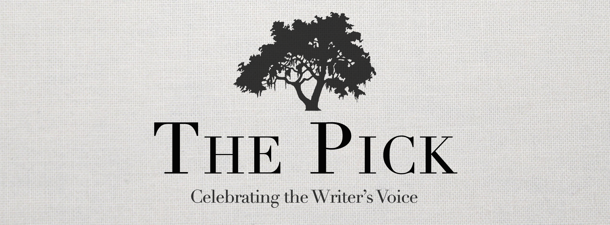
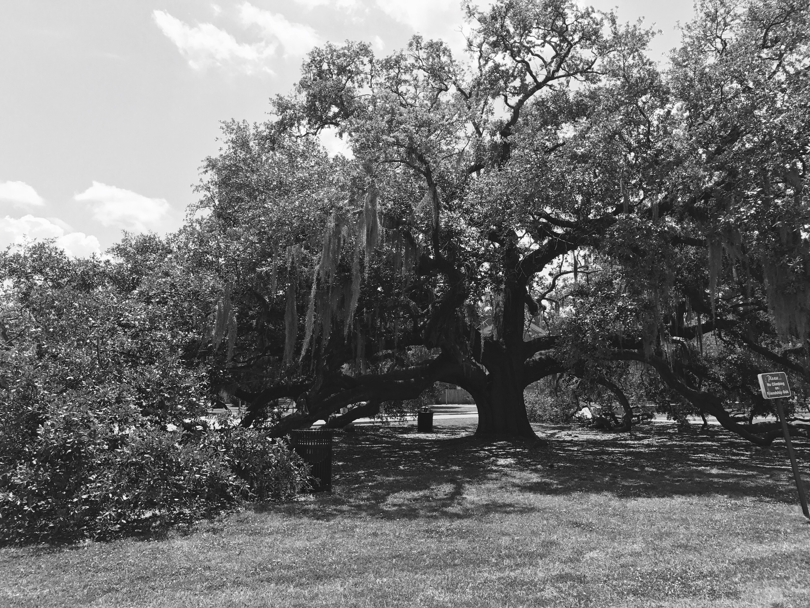
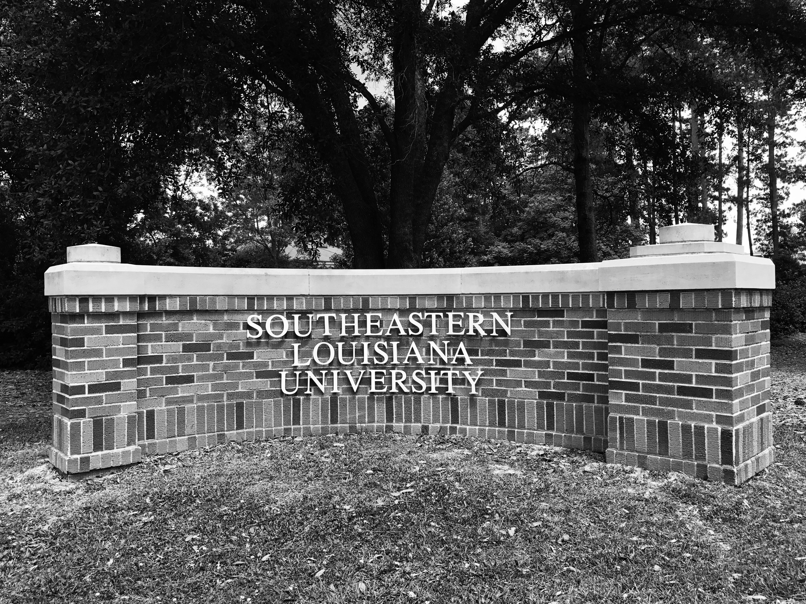
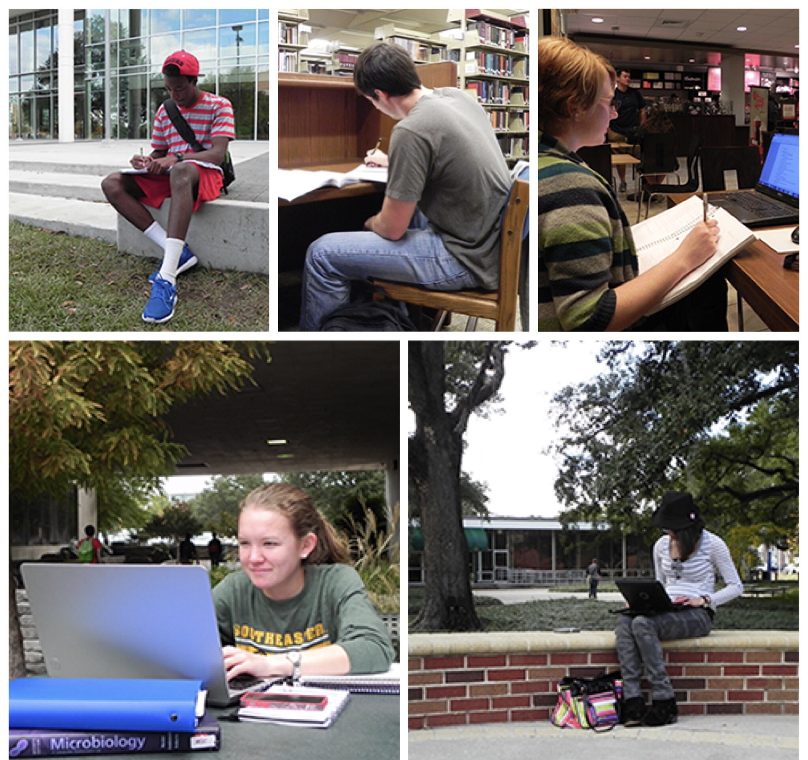

Welcome!
The Pick is Southeastern’s journal of student-authored works, representing all disciplines in the university’s curriculum. Published by the English Department and the Southeastern Writing Center, The Pick reviews any submissions initially composed to fulfill graduate or undergraduate class assignments. Submissions are made year round.
Prior to publication, The Pick reviews submissions for conditional acceptance. Authors of conditionally accepted works meet with a Pick editor to collaborate on revisions proposed by The Pick editorial staff. Southeastern faculty members subsequently complete a second review of submissions and suggest additional modifications. The Pick’s editorial staff then selects from those works that successfully adhere to the peer-and-faculty review process.
The Pick provides opportunity for students to develop publishing careers and serves as a writing reference tool for students, Southeastern Writing Center tutors, and faculty members.
Celebrate the writer’s voice! Make your submissions, and allow The Pick to pick you.


Where Do We Find Our Inspiration?
Where
Geography plays an important role in how we express ourselves. It affects the accent, velocity, rhythm, volume, and word choice of our expressions. You don’t have to think of geography on the scale of continents, states, mountains, seas, rivers, bayous, and lakes though. Much smaller spaces can affect our mood and so affect the subject and demeanor of our expressions. Where do you find your inspiration? In the library? In the shade under the trees? In the quad? On a bench in the sun? Or in the writing center?
Where's Your Inspiration?
